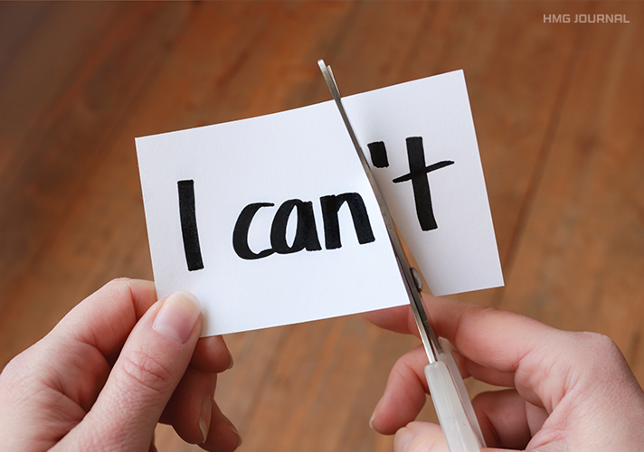

자신에 대한 존엄성이 타인들의 외적인 인정이나 칭찬에 의한 것이 아니라 자신 내부의 성숙된 사고와 가치에 의해 얻어지는 개인의 의식을 말한다. 스스로 가치 있는 존재임을 인식하고, 인생의 역경에 맞서 이겨낼 수 있는 자신의 능력을 믿고 자신의 노력에 따라 이뤄낼 수 있다는 일종의 자기 확신이다.
최근에 주변으로부터 종종 똑 부러진다거나, 자존감이 높아 보인다는 말들을 자주 듣는다. 그럴 때면 높은 자존감에 대해 끄덕인다. 내가 생각해도 그렇기 때문에!
하지만 난 자존감이 굉장히 낮은 사람이었다.
중학교 시절 단지 복도를 걸어올 뿐인데 “쟤는 왜 저렇게 걸어?”라며 인신공격을 당했을 때, 놀다가 친구를 다치게 해서 “놀아주면 신나서;;”라는 말을 들었을 때 등 이러한 말들이 나에게 콤플렉스와 트라우마를 심어주었고, 나 스스로를 작아지게 만들었다. 이후에 듣는 모든 안 좋은 말들, 상황들을 내 탓으로 돌리기 시작했다.
그때의 난 위축됐고, 용기가 없었다. 이유 없이 모두에게 미안한 마음 뿐이었다.
중학교 졸업이 다가올 쯤 항상 안 좋은 일의 원인이 나라는 생각을 하고 있다는 걸 알았을 때 어떻게 하면 조금이라도 나아질 수 있을지 겨울방학 내내 고민하기 시작했다. 자존감을 높이기 위해서보단 단지 너무 힘들어서, 빠져나오고 싶은 마음에서 시작했다.
첫 번째로 “미안함”을 지웠다.
모든 상황에 있어서 내 탓으로 돌리고 쓸데없이 미안해하는 버릇을 고쳤다. 이유 없는 미안함은 나도 상대도 힘들게 하는 습관이었다.
두 번째로 ‘눈치’를 지웠다.
여기저기서 눈치를 보면서 머뭇거릴 뿐, 아무것도 해내지 못하는 나를 혐오했다. ‘내가 너라면 내가 하는 행동에 기분 나쁘지 않을 걸?’ 이때부터 “내가 다 이긴다”고 생각하고 있다. 욕을 먹더라도 내가 할 일은 해야 한다.
세 번째로 ‘친구’를 놓았다.
나를 친구로 대하지 않는 사람은 더이상 친구가 아니다. 나만 노력해서 이어지는 관계는 없다. 친구라고 생각했던 사람들과의 인연을 미련 없이 끊었다.
마지막으로 ‘나의 장단점’을 확실히 했다.
나의 장점과 단점을 인정할 필요가 있었다. 소심함이 나의 단점이라면 거기서 나오는 섬세함은 나의 장점이었다. 여기서 중요한 건 이 모두를 이기려 하는 나의 노력이 가장 큰 장점이었다.
위에서 말한 것처럼 사람들이 나에게 자존감이 높아보인다 얘기할 정도로 성공했다.
나 스스로가 만족하는 사람이 되기까지 중학교 졸업 후 3년이라는 긴 시간이 걸렸다. 물론 중학교 시절의 트라우마는 사라지지 않는다. 우연히 같은 중학교를 다닌 친구를 만나면 만난 순간에 놀라울 정도로 노력이 리셋된다. 친구에게 들었던 인신공격은 지금도 나에게 큰 콤플렉스다. 하지만 그마저도 이겨내는 당당함을 가질 정도로 나의 노력과 자존감이 빛을 발하고 있다.
‘무엇이든 이겨내는 사람’이라는 호칭을 나에게 붙여주면서 용기가 생겼다. 나를 1순위로 생각해 인간관계에 미련을 갖지 않게 되었고, 마음에 여유가 생기면서 다른 사람에게 줄 수 있는 마음이 늘어났다. 당당한 모습에 매력을 느끼는 사람들도 생겼고 덕분에 이상형을 만나 먼저 고백해 예쁜 연애를 하고 있다.
가장 중요한 건 어떤 일이든 자신 있게 행할 수 있게 되었다는 것!!
사전에서는 주로 자신을 용서하고 격려하면서 긍정적으로 생각하는 것으로 자존감을 높일 수 있다고 얘기한다. 하지만 나의 생각은 다르다. 자존감이 높기 때문에 위와 같은 생각을 하고 행동할 수 있는 것이다. 긍정적인 생각을 억지로 하는 것만큼 힘든 것은 없다.
그렇기에 내 기준에서의 작은 도전을 하나씩 쌓아가는 게 중요하다고 느낀다. 타인의 기준이 아니라 내 기준의 장점이 진짜 내 장점이고 그걸 알아내고자 노력하는 사람이 정말 대단한 사람이다.